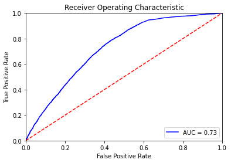
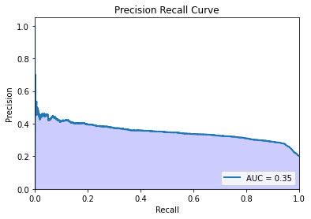

Predicting Hospital No-Shows with Neural Networks
Posted on Jan 20, 2022 - 7 min read
Let’s use machine learning to figure out why 30% of patients miss their scheduled appointments!
This project will be orgnaized as such:
- Collect Data
- Data Preprocessing
- EDA
- Model Buidling
- Conclusions
1. Collect Data
Because I do not readily have access to my own data, for this project, we will be using Kaggle’s “Medical Appointment No Shows.” You can download the file here if you want to follow along with this code.
# import out necessary libraries
import numpy as np
import pandas as pd
import matplotlib.pyplot as plt
import seaborn as sns
# read the data
noShows = pd.read_csv('KaggleV2-May-2016.csv')
noShows.head()
.dataframe tbody tr th {
vertical-align: top;
}
.dataframe thead th {
text-align: right;
}
2. Data Preprocessing
You can read a bit more about the importance of data preprocessing here.
First, lets take a look at what were working with:
2.1 Clean Data
There are a few housekeeping taks we need to perform based on the data head, such as:
- correcting some spelling
- dropping columns with no value
# Correcting a few spelling errors in the original table
noShows.rename(columns = {'Hipertension': 'Hypertension',
'Handcap': 'Handicap'}, inplace = True)
# Tidying the table by dropping useless columns
noShows.drop('PatientId', axis=1, inplace = True)
noShows.drop('AppointmentID', axis=1, inplace = True)
# Checking for NaNs and outliers
print('Age:',sorted(noShows.Age.unique()))
print('Gender:',noShows.Gender.unique())
print('Diabetes:',noShows.Diabetes.unique())
print('Alchoholism:',noShows.Alcoholism.unique())
print('Hypertension:',noShows.Hypertension.unique())
print('Handicap:',noShows.Handicap.unique())
print('Scholarship:',noShows.Scholarship.unique())
print('SMS_received:',noShows.SMS_received.unique())
print('Neighbourhood:',noShows.Neighbourhood.unique())
Age: [-1, 0, 1, 2, 3, 4, 5, 6, 7, 8, 9, 10, 11, 12, 13, 14, 15, 16, 17, 18, 19, 20, 21, 22, 23, 24, 25, 26, 27, 28, 29, 30, 31, 32, 33, 34, 35, 36, 37, 38, 39, 40, 41, 42, 43, 44, 45, 46, 47, 48, 49, 50, 51, 52, 53, 54, 55, 56, 57, 58, 59, 60, 61, 62, 63, 64, 65, 66, 67, 68, 69, 70, 71, 72, 73, 74, 75, 76, 77, 78, 79, 80, 81, 82, 83, 84, 85, 86, 87, 88, 89, 90, 91, 92, 93, 94, 95, 96, 97, 98, 99, 100, 102, 115]
Gender: ['F' 'M']
Diabetes: [0 1]
Alchoholism: [0 1]
Hypertension: [1 0]
Handicap: [0 1 2 3 4]
Scholarship: [0 1]
SMS_received: [0 1]
Neighbourhood: ['JARDIM DA PENHA' 'MATA DA PRAIA' 'PONTAL DE CAMBURI' 'REPÚBLICA'
'GOIABEIRAS' 'ANDORINHAS' 'CONQUISTA' 'NOVA PALESTINA' 'DA PENHA'
'TABUAZEIRO' 'BENTO FERREIRA' 'SÃO PEDRO' 'SANTA MARTHA' 'SÃO CRISTÓVÃO'
'MARUÍPE' 'GRANDE VITÓRIA' 'SÃO BENEDITO' 'ILHA DAS CAIEIRAS'
'SANTO ANDRÉ' 'SOLON BORGES' 'BONFIM' 'JARDIM CAMBURI' 'MARIA ORTIZ'
'JABOUR' 'ANTÔNIO HONÓRIO' 'RESISTÊNCIA' 'ILHA DE SANTA MARIA'
'JUCUTUQUARA' 'MONTE BELO' 'MÁRIO CYPRESTE' 'SANTO ANTÔNIO' 'BELA VISTA'
'PRAIA DO SUÁ' 'SANTA HELENA' 'ITARARÉ' 'INHANGUETÁ' 'UNIVERSITÁRIO'
'SÃO JOSÉ' 'REDENÇÃO' 'SANTA CLARA' 'CENTRO' 'PARQUE MOSCOSO'
'DO MOSCOSO' 'SANTOS DUMONT' 'CARATOÍRA' 'ARIOVALDO FAVALESSA'
'ILHA DO FRADE' 'GURIGICA' 'JOANA D´ARC' 'CONSOLAÇÃO' 'PRAIA DO CANTO'
'BOA VISTA' 'MORADA DE CAMBURI' 'SANTA LUÍZA' 'SANTA LÚCIA'
'BARRO VERMELHO' 'ESTRELINHA' 'FORTE SÃO JOÃO' 'FONTE GRANDE'
'ENSEADA DO SUÁ' 'SANTOS REIS' 'PIEDADE' 'JESUS DE NAZARETH'
'SANTA TEREZA' 'CRUZAMENTO' 'ILHA DO PRÍNCIPE' 'ROMÃO' 'COMDUSA'
'SANTA CECÍLIA' 'VILA RUBIM' 'DE LOURDES' 'DO QUADRO' 'DO CABRAL' 'HORTO'
'SEGURANÇA DO LAR' 'ILHA DO BOI' 'FRADINHOS' 'NAZARETH' 'AEROPORTO'
'ILHAS OCEÂNICAS DE TRINDADE' 'PARQUE INDUSTRIAL']
# Assuming nobody has an age of -1 year, delete this record
# Also assuming age 0 means babies
noShows = noShows[noShows.Age >= 0]
print('Age:',sorted(noShows.Age.unique()))
Age: [0, 1, 2, 3, 4, 5, 6, 7, 8, 9, 10, 11, 12, 13, 14, 15, 16, 17, 18, 19, 20, 21, 22, 23, 24, 25, 26, 27, 28, 29, 30, 31, 32, 33, 34, 35, 36, 37, 38, 39, 40, 41, 42, 43, 44, 45, 46, 47, 48, 49, 50, 51, 52, 53, 54, 55, 56, 57, 58, 59, 60, 61, 62, 63, 64, 65, 66, 67, 68, 69, 70, 71, 72, 73, 74, 75, 76, 77, 78, 79, 80, 81, 82, 83, 84, 85, 86, 87, 88, 89, 90, 91, 92, 93, 94, 95, 96, 97, 98, 99, 100, 102, 115]
2.2 Feature Engineering + Data Transformation
# Convert categorical variable to binary
noShows['No-show'] = noShows['No-show'].map({'Yes':1, 'No':0})
noShows['Gender'] = noShows['Gender'].map({'F':1, 'M':0})
# We're only interested in the date, and not the time of day, so we'll remove the time with the below:
noShows.ScheduledDay = noShows.ScheduledDay.apply(np.datetime64)
noShows['ScheduledDay'] = noShows['ScheduledDay'].dt.date
# Converting date columns into datetime64 datatype
noShows.AppointmentDay = noShows.AppointmentDay.apply(np.datetime64)
noShows.ScheduledDay = noShows.ScheduledDay.apply(np.datetime64)
# Adding a column for 'Waiting Time'
noShows['WaitingTime'] = pd.to_timedelta((noShows['AppointmentDay'] - noShows['ScheduledDay'])).dt.days
noShows['WaitingTime'] = noShows['WaitingTime'].apply(np.int64)
# Create Dummy Variables for Neighborhood
dummy_cols = ['Neighbourhood']
noShows = pd.get_dummies(noShows, columns = dummy_cols)
noShows.head()
.dataframe tbody tr th {
vertical-align: top;
}
.dataframe thead th {
text-align: right;
}
noShows.head()
# Note: the timepoints for 'AppointmentDay' have all dissapeared, as they were set exactly to 00:00:00
.dataframe tbody tr th {
vertical-align: top;
}
.dataframe thead th {
text-align: right;
}
print("\nNoShow and Show '%' of Patients\n")
show = noShows.groupby(['No-show']).size()[0]/(noShows.groupby(['No-show']).size()[0]+noShows.groupby(['No-show']).size()[1])
print("Percent of Patients who `Showed Up` => {:.2f}%".format(show*100))
noshow = noShows.groupby(['No-show']).size()[1]/(noShows.groupby(['No-show']).size()[0]+noShows.groupby(['No-show']).size()[1])
print("Percent of Patients who Did `Not Showed Up` => {:.2f}%".format(noshow*100))
NoShow and Show '%' of Patients
Percent of Patients who `Showed Up` => 79.81%
Percent of Patients who Did `Not Showed Up` => 20.19%
2. Exploratory Data Analysis
3. Build Model that Predicts if a patient will show up to their appointment
3.1 Create testing and training sets.
# choose out colunms of interest
prediction_var = ['Gender','Age','Scholarship','Hypertension','Diabetes','Alcoholism','Handicap','SMS_received','WaitingTime']
noShows_drop = noShows[prediction_var]
from sklearn.model_selection import train_test_split
train, test = train_test_split(noShows, test_size = 0.15)
# variables used for prediciton
train_x = train[prediction_var]
# predicting no-shows
train_y = train['No-show']
# variables used for testing model
test_x = test[prediction_var]
# predicting no-shows
test_y = test['No-show']
print("Train set data shape: " + str(train_x.shape))
print("Test set data shape: " + str(test_x.shape))
Train set data shape: (93947, 9)
Test set data shape: (16579, 9)
df = train_x
print(df[(df < 0).all(axis=1)])
Empty DataFrame
Columns: [Gender, Age, Scholarship, Hypertension, Diabetes, Alcoholism, Handicap, SMS_received, WaitingTime]
Index: []
from sklearn.metrics import classification_report,confusion_matrix,f1_score
def report(y_test, y_pred):
"""
Creates confusion matrix and classification report
Args:
y_test: splitted test dataframe labels
y_pred: predictions for test dataframe
Returns:
None
"""
cm = confusion_matrix(y_test, y_pred)
sns.heatmap(cm, annot=True,fmt='d',cmap="flare");
print(classification_report(y_test,y_pred))
3.3 Build a DecisionTreeClassifier
# import DecisionTreeClassifier model
from sklearn.tree import DecisionTreeClassifier
#create DecisionTreeClassifier classification obj
dt_clf = DecisionTreeClassifier(random_state=0)
#training via DecisionTreeClassifier classficiation model
dt_clf.fit(train_x, train_y)
#make prediction using the test set
pred_y = dt_clf.predict(test_x)
print("Feature Importance:\n")
for name, importance in zip(noShows_drop.columns, np.sort(dt_clf.feature_importances_)[::-1]):
print("{} -- {:.2f}".format(name, importance))
Feature Importance:
Gender -- 0.51
Age -- 0.32
Scholarship -- 0.05
Hypertension -- 0.03
Diabetes -- 0.03
Alcoholism -- 0.02
Handicap -- 0.02
SMS_received -- 0.02
WaitingTime -- 0.01
dt_clf.score(test_x, test_y)
0.7649436033536402
- Build a RandomForestClassifier
# import RandomForestClassifier model
from sklearn.ensemble import RandomForestClassifier
#create RandomForestClassifier classification obj
rf_clf = RandomForestClassifier(random_state=0)
#training via RandomForestClassifier classficiation model
rf_clf.fit(train_x, train_y)
print("Feature Importance:\n")
for name, importance in zip(noShows_drop.columns, np.sort(rf_clf.feature_importances_)[::-1]):
print("{} -- {:.2f}".format(name, importance))
Feature Importance:
Gender -- 0.52
Age -- 0.40
Scholarship -- 0.02
Hypertension -- 0.02
Diabetes -- 0.01
Alcoholism -- 0.01
Handicap -- 0.01
SMS_received -- 0.01
WaitingTime -- 0.01
rf_clf.score(test_x, test_y)
0.7663309005368237
Build a Neural Network to Classify
# import our model. We are using a shallow NN
from sklearn.neural_network import MLPClassifier
# create model + tune hyper parameters
model = MLPClassifier(hidden_layer_sizes=(5, 2))
# fit the model using the training variables + answers
model.fit(train_x, train_y)
MLPClassifier(hidden_layer_sizes=(5, 2))
# ask the model to predict the probability of no show vs NOT no show
proba_prediction = model.predict_proba(test_x)
# probability at each point of that patient being a no-shows
prediction = proba_prediction[:,1]
prediction
array([0.3427608 , 0.26341053, 0.24750035, ..., 0.22418585, 0.30171473,
0.02340378])
import sklearn.metrics as metrics
from sklearn.metrics import precision_score, recall_score, confusion_matrix, roc_curve, precision_recall_curve, accuracy_score
def ROCAUC(test_y, prediction):
fpr, tpr, threshold = metrics.roc_curve(test_y, prediction)
roc_auc = metrics.auc(fpr, tpr)
plt.title('Receiver Operating Characteristic')
plt.plot(fpr, tpr, 'b', label = 'AUC = %0.2f' % roc_auc)
plt.legend(loc = 'lower right')
plt.plot([0, 1], [0, 1],'r--')
plt.xlim([0, 1])
plt.ylim([0, 1])
plt.ylabel('True Positive Rate')
plt.xlabel('False Positive Rate')
plt.show()
# Precision-recall curve
def plot_precision_recall():
plt.step(recall, precision, color = 'b', alpha = 0.2,
where = 'post')
plt.fill_between(recall, precision, step ='post', alpha = 0.2,
color = 'b')
auc = metrics.auc(recall, precision)
plt.plot(recall, precision, linewidth=2, label = 'AUC = %0.2f' % auc)
plt.legend(loc = 'lower right')
plt.xlim([0.0,1])
plt.ylim([0.0,1.05])
plt.xlabel('Recall')
plt.ylabel('Precision')
plt.title('Precision Recall Curve')
plt.show();
ROCAUC(test_y, prediction)

precision, recall, thresholds = precision_recall_curve(test_y, prediction)
plot_precision_recall()

The model is doing an okay job the ROC AUC is 0.72, but the PR AUC is 0.35… not too hot.